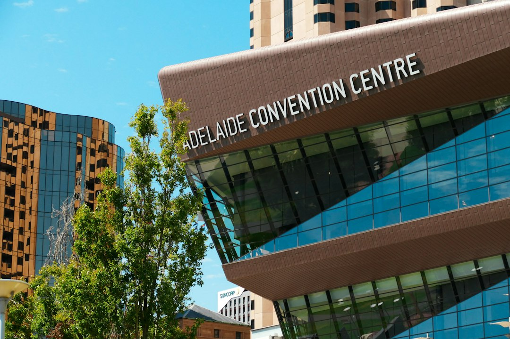

Use a 3 part brief before comparing Adelaide tiling quotes: record the condition, split the job into its layers, then compare the written scope. The published service areas are bathroom tiling, wet-area waterproofing, floor and wall tiling, shower repairs and regrouting, kitchen and laundry tiling, and outdoor or alfresco tiling. The practical detail is the base, water exposure, falls, movement, inclusions and exclusions, not only the tile selection.
For homeowners comparing tiling services adelaide options, the practical task is to describe the room, surface, water exposure and finish before asking anyone to price the job.
Tiling Services Adelaide Explained
Adelaide Tiling & Waterproofing presents tiling and waterproofing as a coordinated job where the finished grout line is only one part of the result. Its published guidance puts the base, movement and falls ahead of appearance when people compare tiling services adelaide options.
Begin by naming the area and the condition. A useful brief says whether the surface is in a bathroom, shower, laundry, kitchen, living area, entry, feature wall, outdoor area or alfresco zone. Add the water exposure, drainage, fixtures, visible cracking, loose tiles, deteriorated grout, earlier repairs and whether the job is a repair or renovation.
For wet areas, separate the finish from the waterproofing layer. The source page explains that tiles and grout are finishes, while the membrane and treated junctions form the waterproof layer. That distinction should appear in the written scope, along with preparation, inspection items and exclusions.
Who This Applies To
This guide is for people who need a clearer brief before requesting a quote. It is most relevant where water, movement, demolition, drainage or access could affect the job, including bathroom renovations, deteriorated showers, laundry and kitchen wet zones, interior floors and walls, and outdoor tiled surfaces.
- Bathroom renovators: coordinate demolition, plumbing and electrical rough-ins, floor falls, membrane boundaries, cabinetry, fixtures and finished floor heights before ordering finishes.
- Shower repair enquiries: separate sealant, grout, plumbing, substrate movement and membrane assumptions before accepting regrouting as the answer.
- Kitchen and laundry work: align splashbacks, floors, cabinetry, appliances and plumbing so tile set-out is not left until other heights are fixed.
- Outdoor and alfresco areas: ask about exposure, drainage, slip needs and substrate movement before choosing tile format or grout.
For a narrower wet-area planning path, the related bathroom tiling guide for Adelaide projects is useful when layout, falls and substrate preparation are the main decisions.
Quote Inputs That Change The Scope
A quote is easier to compare when each provider receives the same project brief. The published process asks the enquirer to describe the room, age, visible symptoms and earlier repairs, then separate plumbing, substrate, waterproofing and finish assumptions. That reduces confusion around preparation, waste, trims, movement joints, waterproofing and screeding.
Photos, approximate dimensions and known product details can be discussed after the first enquiry. If moisture is visible, state where it appears and whether previous work has been attempted. If demolition is involved, record access, fixtures that may move, suspected moisture and hazardous-material questions before work starts.
Ask the written scope to identify preparation, tile format, layout, trims, grout, movement joints, access and waste. Where waterproofing or screeding is needed, it should be described separately. If one provider proposes to coordinate waterproofing and tiling, ask them to confirm the South Australian authorisation relevant to the work.
Repair Or Renovation
A leaking or deteriorated shower needs diagnosis before a finish-level repair is accepted. The source guidance says moisture symptoms may relate to sealant, plumbing, substrate movement or the membrane system. Regrouting may suit maintenance, but it should not be treated as the answer to every leak.
A planned bathroom renovation raises a different set of decisions. Before waterproofing, confirm the substrate, falls, wastes, penetrations, thresholds and membrane system with the responsible provider. Before tiling, set out tile modules, niches, trims, movement joints, cabinetry lines and adjoining floor transitions together.
Adelaide context should be used as an inspection prompt, not a suburb stereotype. The provider names apartment access in the city, coastal exposure at Glenelg and Henley Beach, older villa substrates through Norwood and Unley, and newer slabs around Mawson Lakes or Mount Barker as factors that can affect preparation and sequencing.
Checks Before Accepting A Scope
Before accepting tiling services adelaide work, compare the written detail rather than the shortest description. The stronger scope identifies the actual surface, expected water exposure, preparation, waterproofing or screeding assumptions and finish details. If an item is missing, ask whether it is included, excluded or still subject to inspection.
For wet areas, ask whether membrane boundaries, penetrations, threshold heights, cure sequencing and handover details have been allowed for. Cure timing should follow the membrane system, film thickness and site conditions, rather than a single rule applied to every project.
For visible tiling, ask how tile size, trims, grout, movement joints and adjoining floor transitions will be handled. For exterior surfaces, add drainage, slip needs and exposure to the question list. The scope should let a reader understand what is being prepared, waterproofed, tiled and excluded.
- Describe the condition. Record the room, age, visible symptoms, earlier repairs and whether moisture is already visible.
- Separate the layers. List assumptions about plumbing, substrate, waterproofing, screeding or falls, and the final tile finish.
- Compare written scopes. Check preparation, inclusions, exclusions, access, waste, movement joints, waterproofing and licensed work details.
| Decision | Repair enquiry | Renovation enquiry |
|---|---|---|
| Starting point | Visible symptoms, previous repairs and possible source of the fault | Room layout, demolition, rough-ins, falls and finished heights |
| Waterproofing question | Whether plumbing, junctions, substrate movement or the membrane needs diagnosis | Where membrane boundaries, penetrations and thresholds will sit |
| Tiling question | Whether regrouting is maintenance or only a surface response | How modules, niches, trims and transitions align with fixtures |
Common questions
Do tiles make a shower waterproof? No. The source guidance separates the visible tile and grout finish from the membrane and treated junctions that form the waterproof layer.
Is regrouting enough for a leaking shower? It may be suitable for maintenance, but it should not be accepted as the answer to every leak. The cause may sit with sealant, plumbing, substrate movement or the membrane system.
What should an Adelaide tiling quote include? The source page says a useful quote identifies preparation, tile format, layout, trims, grout, movement joints, access and waste. Waterproofing or screeding should be separately described where required.
Can one contractor handle waterproofing and tiling? The published guidance says the work may sit within one coordinated scope where the contractor holds the appropriate South Australian authorisation for the work involved. Check the licence scope before accepting a quote.
This guide covers Adelaide tiling scope planning for wet areas, repairs, indoor finishes and outdoor tiled surfaces.